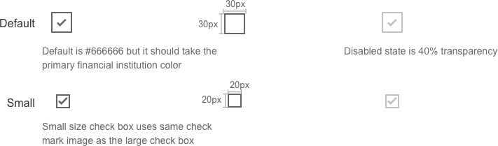

Checkbox
Visual Specifications
There are two sizes for check boxes: small and large. The use of each depends on the size constraints of the page.
Checkboxes are used when there are lists of options and the user may select any number of choices, including none, one, or several. In other words, each checkbox is independent of all other checkboxes on the list, so checking one box does not uncheck the others. A stand-alone checkbox can be used for a single option that the user can turn on or off.
Use the default browser focus state.

Padding between checkbox and its label will be 10px for XS and 15px for other break points.
If there are two or more consecutive check boxes then the padding between them will be 30px
Accessibility
To attain the correct styling:
- The element acting as a checkbox should be focusable and selectable with the keyboard
- It must have role=“checkbox”, so that it is announced to assistive technology as a checkbox
- Aria-checked needs the right state (true or false), so it is announced when the state changes
Additional information:
https://developer.mozilla.org/en-US/docs/Web/Accessibility/ARIA/ARIA_Techniques/
Using_the_checkbox_role
http://webaim.org/techniques/forms/controls#checkbox